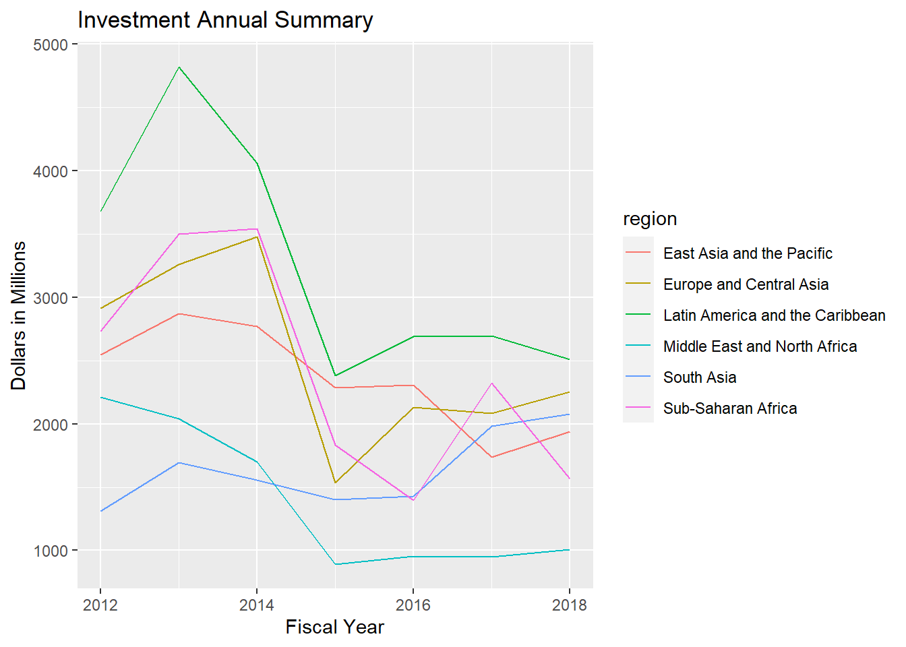
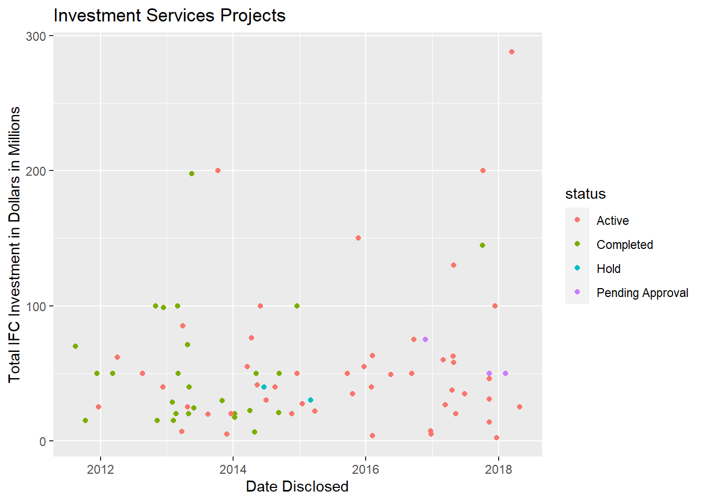
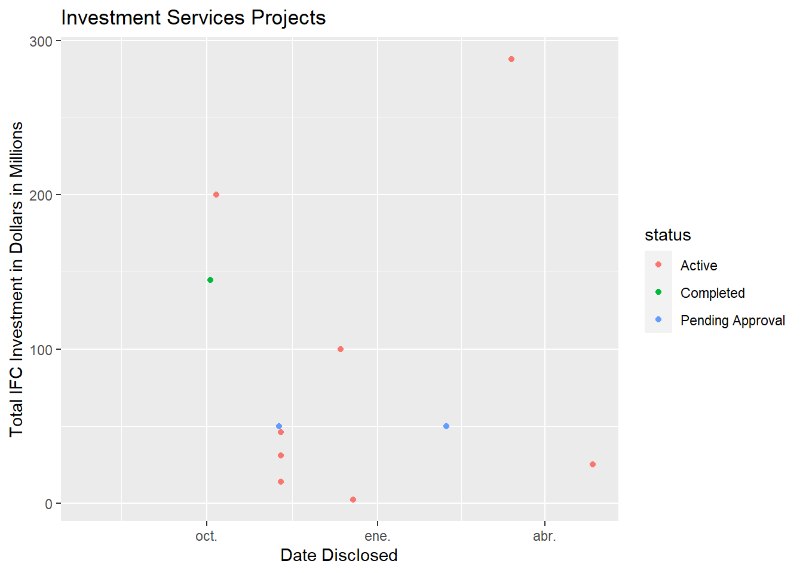

Datasets
Investment Annual Summary
The investment_annual_summary dataset provides a summary of the dollars in millions provided to each region for each fiscal year, from 2012 to 2018.
ggplot(investment_annual_summary, aes(x = fiscal_year, y = dollars_in_millions, color = region)) +
geom_line() +
labs(
title = "Investment Annual Summary",
x = "Fiscal Year",
y = "Dollars in Millions"
)

Investment Projects in Brazil
The investment_services_projects dataset provides information about each investment project from 2012 to 2018. Information listed includes the project name, company name, sector, project status, and investment amounts. Projects that do not have an associated investment amount are excluded from the plot.
country_investment_projects <- investment_services_projects %>%
filter(country == params$country)
ggplot(country_investment_projects, aes(x = date_disclosed, y = total_investment, color = status)) +
geom_point() +
labs(
title = "Investment Services Projects",
x = "Date Disclosed",
y = "Total IFC Investment in Dollars in Millions"
)
## Warning: Removed 7 rows containing missing values (geom_point).

Investment Projects in Brazil in 2018
The investment_services_projects dataset was filtered below to focus on information about each investment project from the 2018 fiscal year, and is referred to as country_annual_investment_projects. Projects that do not have an associated investment amount are excluded from the plot.
country_annual_investment_projects <- investment_services_projects %>%
filter(country == params$country,
date_disclosed >= params$year_start,
date_disclosed <= params$year_end)
ggplot(country_annual_investment_projects, aes(x = date_disclosed, y = total_investment, color = status)) +
geom_point() +
labs(
title = "Investment Services Projects",
x = "Date Disclosed",
y = "Total IFC Investment in Dollars in Millions"
)
## Warning: Removed 4 rows containing missing values (geom_point).

LS0tDQp0aXRsZTogIkludmVzdG1lbnQgUmVwb3J0IGZvciBQcm9qZWN0cyBpbiBgciBwYXJhbXMkY291bnRyeWAiDQphdXRob3I6ICJEYXRhIENhbXAiDQpvdXRwdXQ6IA0KICBodG1sX2RvY3VtZW50Og0KICAgIGNzczogZXN0aWwuY3NzDQogICAgdG9jOiB0cnVlDQogICAgdG9jX2Zsb2F0Og0KICAgICAgY29sbGFwc2U6IGZhbHNlDQogICAgICBzbW9vdGhfc2Nyb2xsOiBmYWxzZQ0KICAgIGNvZGVfZG93bmxvYWQ6IHRydWUNCmRhdGU6ICJgciBmb3JtYXQoU3lzLnRpbWUoKSwgJyVkICVCICVZJylgIg0KcGFyYW1zOg0KICBjb3VudHJ5OiBCcmF6aWwNCiAgZnk6IDIwMTgNCiAgeWVhcl9zdGFydDogMjAxNy0wNy0wMQ0KICB5ZWFyX2VuZDogMjAxOC0wNi0zMA0KLS0tDQoNCmBgYHtyIHNldHVwLCBpbmNsdWRlID0gRkFMU0V9DQprbml0cjo6b3B0c19jaHVuayRzZXQoZmlnLmFsaWduID0gJ2NlbnRlcicsIGVjaG8gPSBUUlVFKQ0KYGBgDQoNCmBgYHtyIGRhdGEsIGluY2x1ZGUgPSBGQUxTRX0NCmxpYnJhcnkocmVhZHIpDQpsaWJyYXJ5KGRwbHlyKQ0KbGlicmFyeShnZ3Bsb3QyKQ0KDQppbnZlc3RtZW50X2FubnVhbF9zdW1tYXJ5IDwtIHJlYWRfY3N2KCJodHRwczovL2Fzc2V0cy5kYXRhY2FtcC5jb20vcHJvZHVjdGlvbi9yZXBvc2l0b3JpZXMvNTc1Ni9kYXRhc2V0cy9kMDI1MWYyNjExN2JiY2YwZWE5NmFjMjc2NTU1YjkwMDNmNGY3MzcyL2ludmVzdG1lbnRfYW5udWFsX3N1bW1hcnkuY3N2IikNCmludmVzdG1lbnRfc2VydmljZXNfcHJvamVjdHMgPC0gcmVhZF9jc3YoImh0dHBzOi8vYXNzZXRzLmRhdGFjYW1wLmNvbS9wcm9kdWN0aW9uL3JlcG9zaXRvcmllcy81NzU2L2RhdGFzZXRzL2JjYjJlMzllY2JlNTIxZjRiNDE0YTIxZTM1ZjdiOGI1YzUwYWVjNjQvaW52ZXN0bWVudF9zZXJ2aWNlc19wcm9qZWN0cy5jc3YiKQ0KYGBgDQoNCg0KIyMgRGF0YXNldHMgDQoNCiMjIyBJbnZlc3RtZW50IEFubnVhbCBTdW1tYXJ5DQoNClRoZSBgaW52ZXN0bWVudF9hbm51YWxfc3VtbWFyeWAgZGF0YXNldCBwcm92aWRlcyBhIHN1bW1hcnkgb2YgdGhlIGRvbGxhcnMgaW4gbWlsbGlvbnMgcHJvdmlkZWQgdG8gZWFjaCByZWdpb24gZm9yIGVhY2ggZmlzY2FsIHllYXIsIGZyb20gMjAxMiB0byBgciBwYXJhbXMkZnlgLg0KYGBge3IgaW52ZXN0bWVudC1hbm51YWwtc3VtbWFyeX0NCmdncGxvdChpbnZlc3RtZW50X2FubnVhbF9zdW1tYXJ5LCBhZXMoeCA9IGZpc2NhbF95ZWFyLCB5ID0gZG9sbGFyc19pbl9taWxsaW9ucywgY29sb3IgPSByZWdpb24pKSArDQogIGdlb21fbGluZSgpICsNCiAgbGFicygNCiAgICB0aXRsZSA9ICJJbnZlc3RtZW50IEFubnVhbCBTdW1tYXJ5IiwNCiAgICB4ID0gIkZpc2NhbCBZZWFyIiwNCiAgICB5ID0gIkRvbGxhcnMgaW4gTWlsbGlvbnMiDQogICkNCmBgYA0KDQojIyMgSW52ZXN0bWVudCBQcm9qZWN0cyBpbiBgciBwYXJhbXMkY291bnRyeWANCg0KVGhlIGBpbnZlc3RtZW50X3NlcnZpY2VzX3Byb2plY3RzYCBkYXRhc2V0IHByb3ZpZGVzIGluZm9ybWF0aW9uIGFib3V0IGVhY2ggaW52ZXN0bWVudCBwcm9qZWN0IGZyb20gMjAxMiB0byBgciBwYXJhbXMkZnlgLiBJbmZvcm1hdGlvbiBsaXN0ZWQgaW5jbHVkZXMgdGhlIHByb2plY3QgbmFtZSwgY29tcGFueSBuYW1lLCBzZWN0b3IsIHByb2plY3Qgc3RhdHVzLCBhbmQgaW52ZXN0bWVudCBhbW91bnRzLiBQcm9qZWN0cyB0aGF0IGRvIG5vdCBoYXZlIGFuIGFzc29jaWF0ZWQgaW52ZXN0bWVudCBhbW91bnQgYXJlIGV4Y2x1ZGVkIGZyb20gdGhlIHBsb3QuDQoNCmBgYHtyIGNvdW50cnktaW52ZXN0bWVudC1wcm9qZWN0c30NCmNvdW50cnlfaW52ZXN0bWVudF9wcm9qZWN0cyA8LSBpbnZlc3RtZW50X3NlcnZpY2VzX3Byb2plY3RzICU+JQ0KICBmaWx0ZXIoY291bnRyeSA9PSBwYXJhbXMkY291bnRyeSkgDQoNCmdncGxvdChjb3VudHJ5X2ludmVzdG1lbnRfcHJvamVjdHMsIGFlcyh4ID0gZGF0ZV9kaXNjbG9zZWQsIHkgPSB0b3RhbF9pbnZlc3RtZW50LCBjb2xvciA9IHN0YXR1cykpICsNCiAgZ2VvbV9wb2ludCgpICsNCiAgbGFicygNCiAgICB0aXRsZSA9ICJJbnZlc3RtZW50IFNlcnZpY2VzIFByb2plY3RzIiwNCiAgICB4ID0gIkRhdGUgRGlzY2xvc2VkIiwNCiAgICB5ID0gIlRvdGFsIElGQyBJbnZlc3RtZW50IGluIERvbGxhcnMgaW4gTWlsbGlvbnMiDQogICkNCmBgYA0KDQojIyMgSW52ZXN0bWVudCBQcm9qZWN0cyBpbiBgciBwYXJhbXMkY291bnRyeWAgaW4gYHIgcGFyYW1zJGZ5YA0KDQpUaGUgYGludmVzdG1lbnRfc2VydmljZXNfcHJvamVjdHNgIGRhdGFzZXQgd2FzIGZpbHRlcmVkIGJlbG93IHRvIGZvY3VzIG9uIGluZm9ybWF0aW9uIGFib3V0IGVhY2ggaW52ZXN0bWVudCBwcm9qZWN0IGZyb20gdGhlIGByIHBhcmFtcyRmeWAgZmlzY2FsIHllYXIsIGFuZCBpcyByZWZlcnJlZCB0byBhcyBgY291bnRyeV9hbm51YWxfaW52ZXN0bWVudF9wcm9qZWN0c2AuIFByb2plY3RzIHRoYXQgZG8gbm90IGhhdmUgYW4gYXNzb2NpYXRlZCBpbnZlc3RtZW50IGFtb3VudCBhcmUgZXhjbHVkZWQgZnJvbSB0aGUgcGxvdC4NCmBgYHtyIGNvdW50cnktYW5udWFsLWludmVzdG1lbnQtcHJvamVjdHN9DQpjb3VudHJ5X2FubnVhbF9pbnZlc3RtZW50X3Byb2plY3RzIDwtIGludmVzdG1lbnRfc2VydmljZXNfcHJvamVjdHMgJT4lDQogIGZpbHRlcihjb3VudHJ5ID09IHBhcmFtcyRjb3VudHJ5LA0KICAgICAgICAgZGF0ZV9kaXNjbG9zZWQgPj0gcGFyYW1zJHllYXJfc3RhcnQsDQogICAgICAgICBkYXRlX2Rpc2Nsb3NlZCA8PSBwYXJhbXMkeWVhcl9lbmQpIA0KDQpnZ3Bsb3QoY291bnRyeV9hbm51YWxfaW52ZXN0bWVudF9wcm9qZWN0cywgYWVzKHggPSBkYXRlX2Rpc2Nsb3NlZCwgeSA9IHRvdGFsX2ludmVzdG1lbnQsIGNvbG9yID0gc3RhdHVzKSkgKw0KICBnZW9tX3BvaW50KCkgKw0KICBsYWJzKA0KICAgIHRpdGxlID0gIkludmVzdG1lbnQgU2VydmljZXMgUHJvamVjdHMiLA0KICAgIHggPSAiRGF0ZSBEaXNjbG9zZWQiLA0KICAgIHkgPSAiVG90YWwgSUZDIEludmVzdG1lbnQgaW4gRG9sbGFycyBpbiBNaWxsaW9ucyINCiAgKSANCmBgYA==